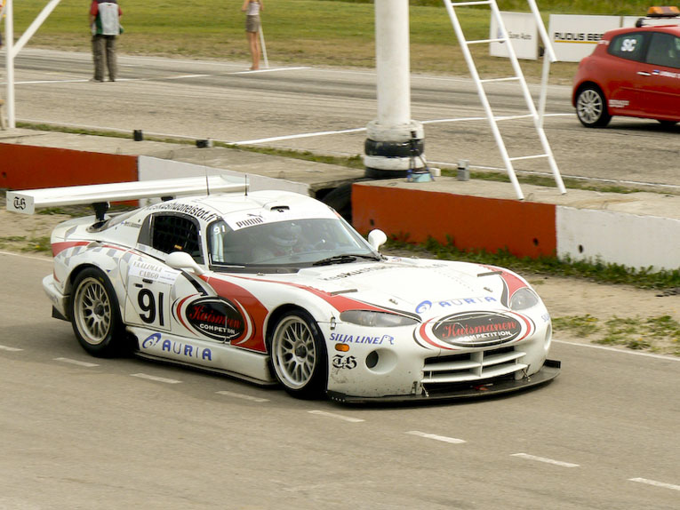

Here Lazy Load plugin is enabled. Images below the fold (the ones lower than window bottom) are not loaded. Timeout will trigger five seconds after all elements of page have been loaded. Scroll down the page and wait to see.
$(function() {
$("img:below-the-fold").lazyload({
placeholder : "img/grey.gif",
event : "sporty"
});
});
$(window).bind('load', function() {
var timeout = setTimeout(function() { $("img").trigger("sporty") }, 5000);
});


